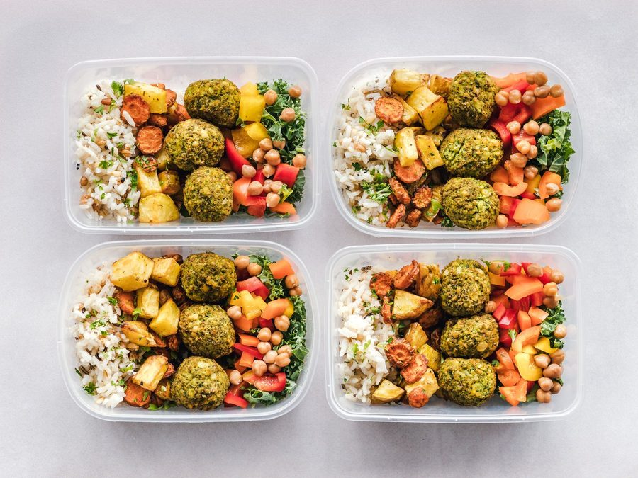

Marmita de cinco dias: como montar sem repetir o mesmo tempero
Como montar 5 marmitas no domingo sem repetir o mesmo tempero base até quarta-feira.

Domingo à tarde, cinco potes na bancada e a mesma dúvida de sempre: como fazer o almoço da semana inteira sem comer a mesma coisa com gosto de "tempero de panela grande" todo santo dia? A resposta não está em cozinhar cinco receitas do zero — isso ninguém tem tempo pra fazer num domingo só. Está em separar o problema em duas partes: a ordem em que você cozinha (porque nem todo alimento aguenta ser reaquecido igual) e como variar o tempero sem multiplicar o trabalho.
Este é o roteiro que resolve as duas partes juntas, do jeito que dá pra terminar em uma tarde de domingo.
Primeiro, a ordem de cozimento — por textura, não por prato
O erro mais comum de quem monta marmita pela primeira vez é cozinhar na ordem que os pratos "fazem sentido" (arroz, depois carne, depois legume). O problema é que cada textura reage diferente ao reaquecimento de três, quatro dias depois — e se você não pensar nisso na hora de cozinhar, a marmita de quarta-feira vai chegar mole, seca ou sem graça.
A lógica certa é cozinhar primeiro o que resiste melhor ao reaquecimento e guardar por último o que é mais sensível:
| Grupo | Exemplos | Resistência ao reaquecimento | Ordem de cozimento |
|---|---|---|---|
| Grãos e leguminosas | feijão, grão-de-bico, lentilha | Alta — melhora com o tempo | 1º (pode ser o de domingo cedo) |
| Carnes de cozimento longo | carne de panela, frango desfiado | Alta — o caldo protege a fibra | 2º |
| Tubérculos e raízes | batata, mandioca, cenoura em cubos | Média — pode ressecar se assada | 3º |
| Arroz | branco, integral | Média — precisa de um respingo de água no reaquecimento | 4º |
| Legumes verdes e crocantes | brócolis, vagem, abobrinha grelhada | Baixa — perdem textura rápido | 5º, o mais próximo possível de guardar |
Na prática: você começa pelo feijão ou pela carne de panela, que ficam no fogo enquanto você prepara o resto, e deixa os legumes verdes por último, já quase na hora de distribuir nos potes. Se sua marmita de quinta-feira tiver brócolis, vale a pena até fazer esse item na véspera em vez de no domingo — a diferença de crocância no prato pronto é grande.
Por que isso importa mais do que o tempero
Comida com textura errada parece "sem sabor" mesmo com tempero perfeito, porque o cérebro associa sabor à mastigação. Um brócolis murcho reaquecido no micro-ondas dá a sensação de comida requentada mesmo que o tempero seja idêntico ao do dia em que foi feito. Resolver a textura primeiro é o que faz a marmita de quarta-feira ter gosto de "recém-feita".
Depois, o tempero — três bases, cinco pratos
Aqui está o segredo real de quem monta marmita de cinco dias sem enjoar: você não faz cinco temperos, faz três bases e distribui cada uma em dois pratos diferentes, variando o que entra por cima. Se quiser entender por que a ordem de adicionar sal muda o resultado de cada base, o texto sobre sal — quando e quanto colocar em cada preparo ajuda a calibrar esse ponto.
Base 1 — refogado de alho e cebola com louro
É a base clássica do feijão e da carne de panela. Refogue cebola picada até dourar, junte alho amassado só no final (queima fácil), acrescente uma folha de louro no cozimento. Essa base sustenta dois pratos completamente diferentes: um feijão simples e uma carne desfiada no molho — o sabor de fundo é o mesmo, mas a proteína e o acompanhamento mudam totalmente a percepção.
Base 2 — tempero seco de cominho, páprica e pimenta-do-reino
Ideal pra frango grelhado ou assado e pra legumes que vão pro forno ou pra air fryer. É uma base "seca", sem líquido, que você pode misturar de uma vez em pote e usar em porções pros dois pratos. Se for grelhar o frango em vez de assar, o texto sobre o ponto da carne na grelha mostra como saber quando virar sem cortar pra checar.
Base 3 — molho de tomate com orégano e um toque de azeite
Serve de base pro quinto prato — pode ser um arroz de forno, um filé ao molho ou até um legume gratinado. É a base mais versátil porque aceita quase qualquer proteína ou vegetal que sobrou da semana.
O segredo não é temperar cinco vezes. É fazer três bases de fundo bem feitas e deixar que a proteína, o método de cozimento e o acompanhamento façam o trabalho de parecerem pratos diferentes.
Com essas três bases você cobre as cinco marmitas sem repetir o gosto de segunda a sexta — e sem multiplicar o tempo de tempero, que costuma ser a parte mais chata de organizar o domingo.
Recipiente e vedação: onde a marmita se perde antes de chegar na mesa
Escolher o pote certo evita dois problemas clássicos: vazamento na bolsa térmica e comida ressecada no reaquecimento. Alguns pontos que fazem diferença real:
- Divisórias internas para o que precisa ficar separado — arroz e feijão podem ir juntos, mas o legume crocante do último dia da lista da tabela acima deve ficar num compartimento à parte, senão ele cozinha no vapor dos outros itens e perde a textura.
- Tampa com trava nas quatro pontas, não só encaixe de pressão no centro — é o que evita o caldo do feijão escorrer dentro da bolsa térmica no transporte.
- Vidro para quem vai ao micro-ondas com frequência — aquece de forma mais uniforme que plástico e não retém odor de tempero de um dia pro outro; plástico tolerante a micro-ondas resolve se o vidro pesar demais pro transporte.
- Um respingo de água antes de reaquecer o arroz — meia colher de sopa por pote, direto sobre o arroz, antes de tampar frouxo e levar ao micro-ondas. É o que evita ele sair seco no dia quatro ou cinco.
- Potes do mesmo tamanho e formato — parece detalhe estético, mas empilha melhor na geladeira e evita abrir o pote errado com pressa de manhã.
Se algum prato da semana sobrar em quantidade maior do que cabe nas cinco marmitas, vale considerar o congelamento em vez de forçar tudo na semana corrente — o texto sobre congelamento correto do que rende e do que estraga a textura mostra quais preparos aguentam o freezer bem e quais perdem a graça.
Roteiro de domingo, do início ao fim
- Manhã: deixe o feijão ou o grão-de-bico de molho enquanto organiza a bancada e separa os potes.
- Meio-dia: cozinhe a leguminosa e, na sequência, a carne de panela — os dois no fogo baixo enquanto você prepara o resto.
- Início da tarde: tubérculos e arroz, na ordem da tabela.
- Fim da tarde: legumes verdes por último, o mais próximo possível de montar os potes, pra chegarem crocantes na primeira mordida de cada dia.
- Montagem: distribua nos potes já frios (comida quente no pote gera condensação e estraga a textura mais rápido), etiquete com o dia da semana e leve à geladeira.
Se preferir não decorar essa ordem de cabeça toda semana, o app Recheio deixa isso registrado — você monta o cardápio das cinco marmitas uma vez e ele guarda a ordem de cozimento e a lista de compras pra próxima vez que repetir o ciclo.
Marmita de cinco dias sem enjoar não depende de receita nova todo domingo — depende de organizar o que já funciona: cozinhar por ordem de resistência à geladeira, variar duas ou três bases de tempero em cinco combinações diferentes e guardar tudo num pote que não deixa a textura se perder no caminho. Feito isso uma vez, o domingo de preparo fica mais curto a cada semana, porque você já sabe exatamente por onde começar.